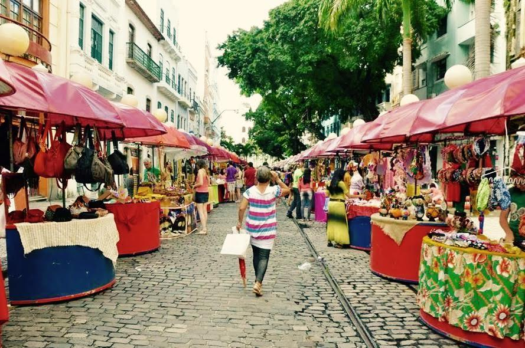

Rua do Bom Jesus
A Rua Bom Jesus representa bem a época em que Recife virou a casa dos holandeses, durante sua ocupação no Brasil (1630-1654).
Ela é uma das ruas mais antigas da capital pernambucana e uma das mais preservadas também.
Rua bem tradicional do Recife Antigo e,
durante o carnaval, por exemplo, é passagem obrigatória de muitos blocos. Seus prédios são coloridos e rendem ótimas fotos.
Essa rua recebeu o título de terceira rua mais bonita do mundo
pela revista americana Architectural Digest! A Rua do Bom Jesus é a única do Brasil
que apareceu na lista, que tem 31 outras vias.
Aos domingos, uma feirinha movimenta a rua que abre espaço para artesãos mostrarem suas peças. Ela se transforma em um verdadeiro centro cultural, com música, comida, muitos turistas no local aproveitando o espaço.
Paço do Frevo
Instalado no Bairro do Recife, o Paço do Frevo é um Centro de Referência em Salvaguarda do Frevo dedicado à difusão, pesquisa, lazer e formação nas áreas da dança e música do frevo.
Seu objetivo é proteger, divulgar
e propagar a prática do frevo para as futuras gerações e ser uma espaço de promoção e celebração da cultura carnavalesca e do frevo durante o ano todo.
Centro de referência e difusão do frevo, o Paço do Frevo
protege
e exibe a riqueza dessa manifestação cultural, declarada Patrimônio Imaterial da Humanidade pela Unesco em 2012.
O objetivo é contar as histórias do frevo e de seus tradicionais personagens durante o ano inteiro, não apenas no carnaval.

O paço do frevo é um local que propõe a perpetuação do ritmo do Frevo através de gerações por meio do incentivo à pesquisa, exposições e ensino da dança e música. Um espaço que congrega a história da mais ilustre
manifestação cultural do pernambucano por meio de sua história e o conto de suas memórias.
Localização Paço do Frevo
Praça do Arsenal da Marinha, S/N, Bairro do Recife